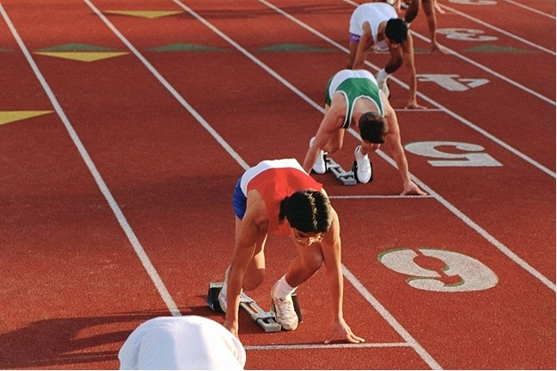
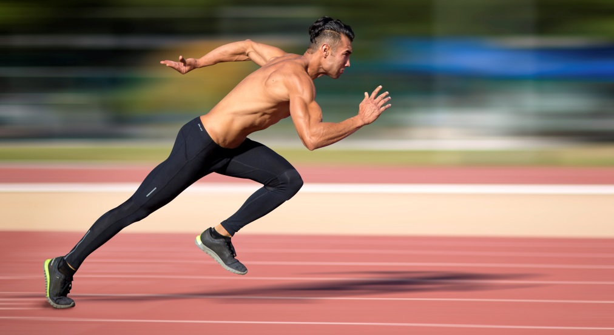

Информация о Легкой атлетике

Легкая атлетика (также известная как трек и полевые соревнования) — это вид спорта, который включает в себя разнообразные дисциплины, основанные на физической подготовке, выносливости, скорости, силе и координации движений. Этот вид спорта объединяет соревнования на беговых дорожках, в прыжках, метаниях и многие другие, позволяя спортсменам демонстрировать разнообразные аспекты своей физической формы и навыков.
Основные компоненты легкой атлетики:
Беговые дисциплины:
Включают бег на разные дистанции: короткие дистанции (100, 200 м), средние дистанции (400 м), длинные дистанции (800, 1500, 5000, 10000 м) и марафон (42,195 км). Также есть бег с барьерами и эстафетные беговые дисциплины.
Прыжки:
Включают прыжки в длину, прыжки в высоту, тройной прыжок и прыжок с шестом. Спортсмены стремятся преодолеть максимальное расстояние или высоту в этих дисциплинах.
Метания:
Включают метание молота, метание диска, метание копья и метание молота. Спортсмены стремятся достичь максимальной дальности или высоты в момент метания.
Многоборья:
Включают десятиборье (для мужчин) и семиборье (для женщин). В этих дисциплинах гоняются за высокими результатами в различных видовых навыках, таких как бег, прыжки и метания.
Подкладка:
Этот термин означает метание ядра (тяжелого металлического шара) на максимальное расстояние.
Гиппикос:
Это дисциплина, где спортсмены бросают дротики в цель.
Марш-бросок:
Включает марш-бросок на 20 и 50 км, где спортсмены бегут на дальние расстояния на треке.
Соревнования с барьерами:
Включают бег с барьерами на разные дистанции, где спортсмены должны перепрыгивать барьеры во время бега.
Легкая атлетика является одним из старейших и самых популярных видов спорта в мире. Она входит в программу Олимпийских игр и предоставляет спортсменам возможность демонстрировать выдающиеся физические способности и установливать новые рекорды. Этот вид спорта также способствует здоровому образу жизни, развитию физической формы и духовного роста.
советы

Стать бегуном — это отличное решение для тех, кто хочет заняться физической активностью, повысить выносливость и достичь личных спортивных целей. Вот шаги, которые помогут вам начать свой путь к становлению бегуном:
Оцените свой уровень физической подготовки:
Прежде чем начать тренироваться, оцените свой текущий уровень физической активности и состояние здоровья. Если у вас есть медицинские противопоказания к интенсивным физическим нагрузкам, обязательно проконсультируйтесь с врачом.
Выберите цель:
Определитесь, какую цель вы хотите достичь как бегун. Это может быть бег на определенную дистанцию, улучшение физической формы или участие в забегах и марафонах.
Планируйте тренировки:
Создайте план тренировок, который будет соответствовать вашей цели. Постепенно увеличивайте интенсивность тренировок, чтобы избежать перетренировки и травм.
Начните с медленного темпа:
Если вы начинающий бегун, начните с медленного темпа и коротких дистанций. Это поможет вашему организму адаптироваться к нагрузкам.
Разминка и растяжка:
Не забывайте делать разминку перед тренировкой и растяжку после нее. Это поможет предотвратить травмы и улучшить гибкость.
Разнообразие тренировок:
Включите в свой план тренировок разнообразные виды бега: длинные дистанции, короткие интенсивные тренировки, бег по пересеченной местности и другие.
Учитесь правильной технике бега:
Освойте правильную технику бега, включая правильное положение тела, взаимодействие с поверхностью и частоту шагов.
Управляйте дыханием:
Отдельное внимание уделяйте дыханию во время бега. Учитеcь дышать глубоко и ритмично.
Питание и гидратация:
Правильное питание и увлажнение очень важно для эффективной тренировки и восстановления после нее. Обращайте внимание на потребление белков, углеводов и жидкости.
Отдых:
Дайте своему телу время на восстановление. Отдыхайте после интенсивных тренировок, чтобы избежать переутомления.
Постоянство:
Бег требует постоянства. Стремитесь к регулярным тренировкам, даже если вначале это может быть сложно.
Присоединитесь к сообществу:
Присоединитесь к беговому сообществу, где вы сможете обмениваться опытом с другими бегунами, получать советы и поддержку.
Участвуйте в забегах:
Постепенно начните участвовать в организованных забегах и мероприятиях. Это поможет вам измерить свой прогресс и почувствовать азарт соревнований.
Помните о безопасности:
Не забывайте носить подходящую спортивную обувь, следите за состоянием покрытия дороги и соблюдайте правила дорожного движения.
Помните, что процесс становления бегуном — это постепенный путь, и успех приходит с практикой и упорством. Начните с малого и постепенно увеличивайте нагрузки, и вы сможете достичь своих спортивных целей.